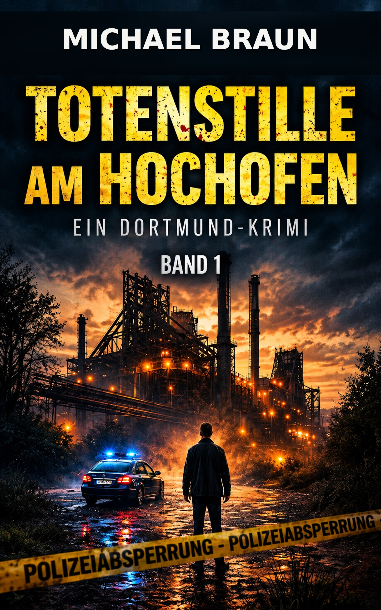

Warum Dortmund als Krimischauplatz funktioniert
Ein Regionalkrimi lebt nicht nur von seinem Fall. Auch der Ort gehört zur Geschichte. Straßen, Stadtviertel, ehemalige Industrieflächen und die Menschen einer Region geben einem Kriminalroman eine eigene Atmosphäre.
Dortmund bietet dafür starke Gegensätze: moderne Stadtentwicklung trifft auf Spuren der Industriegeschichte, dicht bebaute Viertel auf weitläufige ehemalige Gewerbe- und Industrieflächen. Für einen Krimi entstehen daraus Schauplätze mit Wiedererkennungswert.
Ruhrgebietskulisse zwischen Vergangenheit und Gegenwart
Das Ruhrgebiet ist bis heute von seinem industriellen Erbe geprägt. Viele Orte haben sich verändert, doch Fördertürme, Hochöfen, Werkhallen und andere Zeugnisse der Industrie gehören weiterhin zum Bild und zur Identität des Reviers.
Für einen Kriminalroman ist besonders der Gegensatz interessant: Orte, an denen früher Tausende Menschen arbeiteten, können heute völlig anders genutzt werden oder eine beinahe stille Atmosphäre entwickeln.
Was einen Dortmund-Krimi zum Regionalkrimi macht
Ein Regionalkrimi nutzt seinen Schauplatz nicht nur als austauschbare Kulisse. Die Region prägt Figuren, Atmosphäre und Handlung. Bei einem Dortmund-Krimi gehören deshalb lokale Orte, Ruhrgebietsmentalität und die Geschichte der Stadt zum Umfeld der Ermittlung.
Dadurch entsteht für Leserinnen und Leser aus der Region ein Wiedererkennungseffekt. Gleichzeitig können Menschen, die Dortmund nicht kennen, das Revier über die Geschichte kennenlernen.
Industriekulisse als Atmosphäre für einen Kriminalfall
Alte Industrieanlagen besitzen eine besondere Wirkung. Große Hallen, Stahlkonstruktionen und weitläufige Gelände können gleichzeitig imposant und bedrückend wirken.
Für einen Krimi entsteht dadurch eine Kulisse, in der Vergangenheit und Gegenwart unmittelbar aufeinandertreffen. Genau solche Orte passen zu Geschichten über Geheimnisse, alte Verbindungen und Ereignisse, deren Ursachen lange zurückliegen.

Totenstille am Hochofen
Ein Dortmund-Krimi mit Ruhrgebietsatmosphäre, Mordermittlung, Industriekulisse und dem pensionierten Hauptkommissar Leon Brandt im Mittelpunkt.
Mehr über den Dortmund-KrimiEin Mordfall mit Wurzeln in der Vergangenheit
In „Totenstille am Hochofen“ wird auf einem alten Industriegelände in Dortmund die Leiche eines einflussreichen Bauunternehmers gefunden.
Der pensionierte Hauptkommissar Leon Brandt beginnt nachzuforschen. Dabei stößt er auf alte Verbindungen und Geheimnisse, die weit über den zunächst sichtbaren Mordfall hinausreichen.
Die Vergangenheit des Ruhrgebiets ist damit nicht nur Hintergrund. Sie wird Teil der Atmosphäre und des Kriminalfalls.
Dortmund, Lokalkolorit und Krimispannung
Regionale Schauplätze können einem Krimi eine eigene Identität geben. Dortmund und das Ruhrgebiet stehen bei „Totenstille am Hochofen“ deshalb nicht zufällig im Hintergrund, sondern gehören zur Welt der Geschichte.
So verbindet der Roman klassische Mordermittlung mit Dortmunder Lokalkolorit und der rauen Industriekulisse des Reviers.